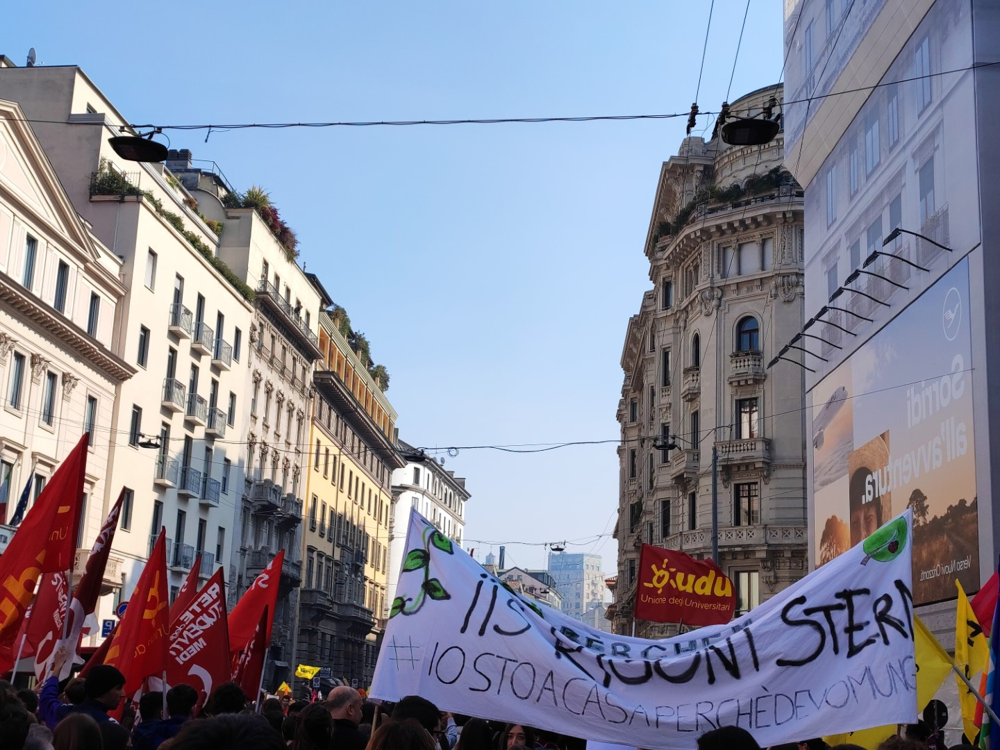
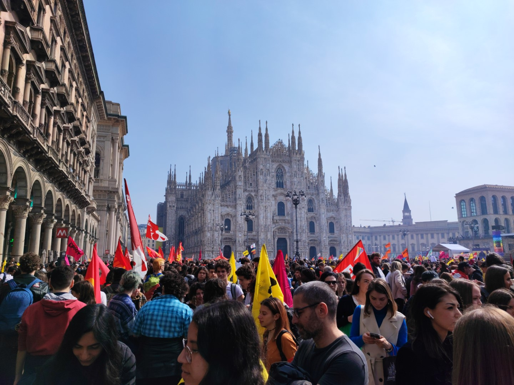
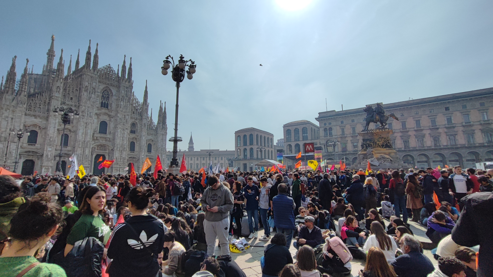

L' ARTICOLO SCOLASTICO
ANCHE SE L'ARTICOLO NON È STATO ANCORA PUBBLICATO, CI TENEVAMO A MOSTRARE IN ANTEPRIMA CIÒ CHE È STATO SCRITTO ED È PROPRIO QUA SOTTO CON TANTO DI FOTO
LA GIORNATA DELLA MEMORIA E DELL’IMPEGNO IN RICORDO DELLE VITTIME INNOCENTI DELLE MAFIE
Di Gugliotta Luca e Pavel Davide Stefano della 5Di
Siamo due studenti della 5Di che il 21 marzo, in rappresentanza dell’I.I.S. Giorgi-Woolf, hanno partecipato alla Giornata della memoria e dell’impegno in ricordo delle vittime innocenti delle mafie che, quest’anno, si è tenuta a Milano. L’evento si è svolto con andata e ritorno in giornata: siamo partiti alle 06:00 da Termini e ritornati alle 21:00. L’esperienza, nonostante si stata molto impegnativa, è stata davvero importante e ci ha arricchiti molto. L’opportunità di prendere parte a questo evento ci è stata data dall’Istituto Di Vittorio-Lattanzio. Con la nostra classe avevamo studiato la storia della mafia, in particolare, negli anni che hanno portato al Maxiprocesso e alle stragi di Capaci e via D’Amelio ma, ad essere sinceri, non sapevamo cosa aspettarci. Grazie alla scuola, siamo però riusciti ad entrare in contatto con l’associazione Libera che ci ha invitato a partecipare a questa manifestazione per ricordare, nominando ogni singola persona in ordine cronologico, i nomi delle vittime innocenti della mafia di cui si ha conoscenza. L’elenco parte dal 1878 arrivando fino a oggi e i nomi sono più di mille. Dal 1996, l’associazione Libera, fondata da Don Luigi Ciotti, organizza questa giornata fortemente voluta da Tina Montinaro, madre di Antonio Montinaro, uno degli uomini della scorta di Falcone che morirono con il magistrato e la moglie Francesca Morvillo nella strage di Capaci organizzata da Cosa Nostra il 23 marzo 1992. Questa strage fu la prima reazione alle condanne che colpirono i capi di Cosa Nostra e a cui si arrivò grazie al maxiprocesso, reso possibile proprio dal lavoro di Falcone e Borsellino. Da allora, tra il 1992 e il 1993, la mafia organizzò una serie di attentati con il tritolo per dichiarare lotta allo Stato italiano. Su questi eventi ancora bisogna fare molta chiarezza e l’arresto di Matteo Messina Denaro, dopo trent’anni di latitanza, dimostra come la mafia goda ancora di una forte protezione e, anche se la stagione delle grandi stragi è ormai finita, bisogna lavorare molto per contrastarla e sconfiggerla davvero. Fortunatamente, questo tema è ancora molto sentito dai giovani e l’evento ha richiamato scuole da tutta l’Italia. Abbiamo potuto felicemente notare un grande supporto da parte degli abitanti di Milano, che si sono dimostrati molto consapevoli sull’importanza di questa manifestazione e degli argomenti che tratta anche se ci aspettavamo una maggiore partecipazione da parte degli adulti che non facevano parte del mondo della scuola. Durante la manifestazione abbiamo sfilato per le strade della città e, a piazza Duomo, abbiamo ascoltato il discorso di Don Luigi Ciotti, fondatore dell’ass.ne Libera. Don Ciotti, ha avvertito i presenti di non cadere nella tentazione dell’indifferenza e di non favorire l’omertà, successivamente ha citato Liliana Segre e l’importanza della memoria; infatti, è importante ricordare tutti i fatti avvenuti nel corso della storia proprio per evitare che essi avvengono di nuovo. Don Luigi Ciotti ha inoltre espresso fiducia verso noi i giovani perché siamo coloro che hanno il potere di ribaltare le condizioni del mondo in cui viviamo. Un altro grande problema sociale che coinvolge la mafia, ha detto, è l’immigrazione: se non viene gestita dagli Stati, lascia uomini e donne disperati nella mani delle organizzazioni criminali. La mafia si arricchisce sfruttando il dolore laddove lo Stato non riesce o non vuole arrivare. Infine, Don Ciotti, ha ricordato la latitanza di Matteo Messina Denaro, nominando figure delle istituzioni che, in una rete di omertà, hanno permesso la sua latitanza in Sicilia. Ognuno, a modo suo, può combattere le ingiustizie di questo mondo ed è per questo che non dobbiamo mai dimenticarci di coloro che hanno sofferto, senza ragione, per mano della Mafia.
QUI SOTTO ALCUNE FOTO
  